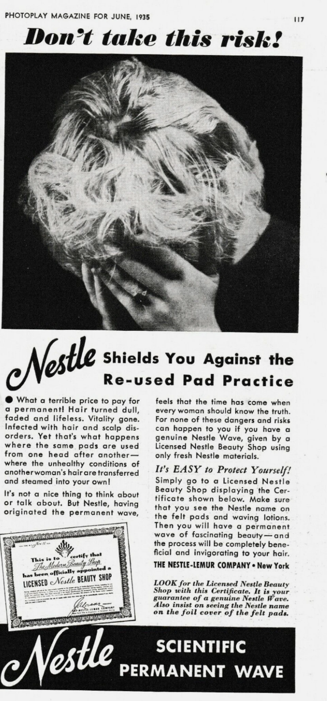

The history of the Nestlé-LeMur Company reflects the transformation of the permanent wave from an individual invention into an industrialized sector of the international beauty industry.
Formed in 1928 in New York, the company represents a key stage in the evolution of hairdressing technology, linking the work of Charles Nestle (Karl Ludwig Nessler) with the emergence of large-scale commercial production.
Origins and Formation (1920s)
The formation of the Nestlé-LeMur Company was not a gradual development, but the result of a clearly identifiable corporate consolidation within the American beauty industry.
The origins lie in two separate entities:
-
the Nestle Company, established by Charles Nestle (Karl Ludwig Nessler) in New York following his transition from salon-based practice to structured commercial activity
-
the LeMur Company, organized in Cleveland in 1924
Both operated within the same emerging market of professional hair treatment and cosmetic production, shaped by increasing demand for reproducible techniques and scalable product systems.
In 1928, the Nestle Company and the LeMur Company were formally merged, creating the Nestlé-LeMur Company.
This merger marks a decisive shift from individual entrepreneurial activity to a structured corporate entity operating within the industrial cosmetics sector. It brought together technical expertise and organizational capacity, forming the basis for further expansion.
Expansion in the United States
Following its formation, Nestlé-LeMur developed within a rapidly expanding American market for beauty and personal care.
The United States in the early 20th century provided specific conditions that accelerated this process:
-
urban population growth
-
increasing demand for standardized beauty treatments
-
the emergence of consumer-oriented cosmetic products
Within this environment, Nestlé-LeMur evolved from a specialized enterprise into a structured manufacturer and distributor. The company’s activities were no longer limited to individual treatments but extended to product systems designed for wider commercial use.
This phase reflects the broader shift of hairdressing from localized practice to a market-oriented industry integrated into urban consumer culture.
Corporate Integration and Network Expansion
During its expansion phase, Nestlé-LeMur became part of a wider network within the American cosmetics industry.
Contemporary records indicate integration with the Joubert group of companies, which included firms involved in the production and distribution of cosmetics such as powders, lip products, hair tonics, and other mass-market goods.
This integration did not dissolve the identity of Nestlé-LeMur. Instead, the company continued to operate under its name while becoming part of a larger corporate structure.
The significance of this phase lies in the shift from a specialized technical manufacturer to a participant in a diversified industrial network. Production, branding, and distribution were increasingly interconnected, reflecting the structural dynamics of the cosmetics industry during the interwar period.
Industrialization of Hair Care
The development of Nestlé-LeMur illustrates a fundamental transformation within the hairdressing profession.
Processes that had originally been experimental and highly individualized were integrated into an industrial system characterized by:
-
standardized products
-
branded treatment methods
-
reproducible application techniques
-
distribution through salon networks
This transition marks a turning point in the history of cosmetology. Innovation was no longer confined to individual practitioners but embedded within corporate structures capable of scaling and maintaining consistency across markets.
The permanent wave, in this context, became not only a technical procedure but part of a broader commercial system.
Mid-20th Century Development
By the mid-20th century, Nestlé-LeMur operated within a mature and competitive market environment.
Archival references indicate continued activity into the 1940s and 1950s, including industrial expansion and infrastructural development. A contemporary report documents the relocation of production and research facilities to a larger manufacturing site in Meriden, Connecticut, reflecting increased operational scale.
Further records suggest corporate adjustments such as stock expansion proposals, pointing to internal growth and structural adaptation within the company.
A documented reference from 1965 confirms the continued existence of Nestlé-LeMur in New York, indicating long-term continuity beyond the initial phase of innovation and early expansion.
Late Corporate Development and Acquisitions (1949–1983)
The later development of the Nestlé-LeMur Company is best understood through its acquisition activity and integration into broader corporate structures within the cosmetics and pharmaceutical industries.
From the late 1940s onward, the company expanded significantly through mergers and brand acquisitions.
In 1949, Nestlé-LeMur entered into a merger with the Joubert group of companies. This integration included a number of established cosmetic brands such as Pinaud, Irresistible and Blue Waltz, and marked a further step toward diversification beyond hair technology.
During the 1950s, the company continued its expansion in North America. In 1954, Nestlé-LeMur acquired the American branch of Harriet Hubbard Ayer from Lever Brothers, followed in 1955 by the acquisition of the Canadian branch. These developments indicate a structured expansion strategy and the integration of existing distribution networks.
The 1960s represent the peak phase of corporate growth. In 1964, Nestlé-LeMur acquired several established brands from Mary Chess Inc., including Marie Earle, Lucien Lelong and Seaforth. These acquisitions reflect a clear shift toward a multi-brand cosmetics portfolio and participation in the international beauty market.
At the same time, the company engaged in active portfolio restructuring. Certain product lines were later divested, such as the sale of the Milkmaid line in 1968. By 1970, the Marie Earle brand had passed to the Hichens Chemical Company, indicating that Nestlé-LeMur was part of a broader cycle of acquisitions and resales within the industry.
Late Ownership Changes and Corporate Transition
By the late 20th century, the structure of the cosmetics industry had shifted significantly, with many established brands becoming part of broader industrial and financial groups.
In 1983, the Nestlé-LeMur Company was acquired by Kleer-Vu Industries Inc., a U.S.-based industrial holding company.
Contemporary financial reports indicate that the acquisition formed part of a wider expansion strategy. Company filings from 1984 document acquisition-related charges exceeding $1.2 million, directly linked to the purchase of Nestlé-LeMur and associated properties.
This transaction reflects a broader pattern of the period, in which historically significant cosmetic companies were absorbed into diversified corporate structures, often outside the traditional beauty sector.
Within this context, Nestlé-LeMur no longer functioned as an independent industrial actor, but as part of a larger portfolio of assets.
The final phase of the company’s history is marked by its acquisition in 1983 by Kleer Vu Industries. This event appears to represent the end of Nestlé-LeMur as an independent corporate entity.
Research Note
The later corporate development is reconstructed from trade records, acquisition data and archival references.
Historical Significance
The importance of the Nestlé-LeMur Company lies not only in its products, but in its role within a broader historical process.
The company represents:
the institutionalization of a technical invention
the transition from craft to industry
the integration of hair care into the global cosmetics market
Without this phase of development, the permanent wave would likely have remained a limited technical innovation rather than becoming a widespread commercial practice.
Connection to Charles Nessler
Although the company developed into an independent corporate structure, its origins remain closely linked to the work of Karl Ludwig Nessler.
His early experiments and commercial activities provided the technological and economic foundation upon which later companies, including Nestlé-LeMur, were built.
Nestlé-LeMur Company
Permanent Wave – History and Technology
Charles Nessler – Biography

By June 1935, the branding had evolved.
The advertisement shown above appeared in Photoplay Magazine and prominently names:
The Nestle-Lemur Company – New York
This marks a transition from the earlier “Nestle Lanolin Co., Ltd.” to a new corporate identity.
The focus of the campaign is no longer the home kit. Instead, it emphasises:
-
Licensed Nestle Beauty Shops
-
Official certification
-
Hygienic safety standards
-
Protection against “re-used pad practice”
-
Authentic Nestle materials
The language reflects a more regulated, professionalised salon system.
The headline “Scientific Permanent Wave” reinforces the positioning of the brand as the originator of the modern permanent wave — a claim historically linked to
Karl Ludwig Nessler.
This 1935 advertisement demonstrates that the Nestle haircare enterprise remained active in New York at least into the mid-1930s and operated under the name “Nestle-Lemur Company.”
Further archival documentation is required to determine:
-
The exact date of the corporate name change
-
The ownership structure of the Nestle-Lemur Company
-
The relationship between the earlier Lanolin company and this later entity
FAQ
What does the 1935 Photoplay advertisement show?
The advertisement published in Photoplay Magazine in June 1935 prominently refers to “The Nestle-Lemur Company – New York.” It demonstrates that the company was actively operating in the American permanent wave market during the mid-1930s.
Why is the 1935 advertisement historically important?
The advertisement reflects a transition from earlier branding associated with the “Nestle Lanolin Co., Ltd.” toward a more formal corporate identity under the name “Nestle-Lemur Company.”
What was the focus of the 1935 Nestle-Lemur campaign?
Unlike earlier advertisements focused on home permanent wave kits, the 1935 campaign emphasised:
-
licensed Nestle Beauty Shops
-
official certification
-
hygienic salon standards
-
authentic Nestle materials
This suggests a more professionalised salon system.
What does “Scientific Permanent Wave” mean in the advertisement?
The phrase reflects the company’s attempt to position permanent waving as a modern, technically controlled and scientifically developed beauty process associated with the Nessler tradition.
Are there still unresolved questions regarding the Nestle-Lemur Company?
Yes. Important aspects still require further archival clarification, including:
-
the exact date of the corporate transition
-
ownership structures
-
the relationship between the earlier Nestle Lanolin Co., Ltd. and the Nestle-Lemur Company
Sources
-
Photoplay Magazine, June 1935
-
Nestle-Lemur Company advertisement (New York)
-
Historical permanent wave advertisements from the 1920s–1930s
-
Research material related to the Nestle Lanolin Co., Ltd.
-
Trade publications on salon systems and beauty technology
-
Archival material related to the permanent wave industry
-
Historical research on Karl Ludwig Nessler and the development of permanent waving